<!DOCTYPE html>
<html>
<head><meta name="generator" content="Hexo 3.9.0">
  <meta charset="utf-8">
  
  <!-- js原型链的世界 | Zesystem&#39;blog -->
  <title>Zesystem's  Space</title>
  <meta name="viewport" content="width=device-width, initial-scale=1, maximum-scale=1">
  <meta name="keywords" content="This is Zesystem's blog.">
  <!-- 
  
    <meta name="keywords" content="MinHow,MinHow's Blog" />
    -->
  <meta name="description" content="js的继承关系不同意搞懂，原型链傻傻不明白，今天用通俗易懂的讲解和例子为大家呈现最简单的原型链理解。">
<meta name="keywords" content="原型链,继承">
<meta property="og:type" content="article">
<meta property="og:title" content="js原型链的世界">
<meta property="og:url" content="https://zesystem.github.io/2019/08/02/js原型链的世界/index.html">
<meta property="og:site_name" content="Zesystem&#39;blog">
<meta property="og:description" content="js的继承关系不同意搞懂，原型链傻傻不明白，今天用通俗易懂的讲解和例子为大家呈现最简单的原型链理解。">
<meta property="og:locale" content="default">
<meta property="og:image" content="https://zesystem.github.io/2019/08/02/js原型链的世界/1.png">
<meta property="og:image" content="https://zesystem.github.io/2019/08/02/js原型链的世界/2.png">
<meta property="og:image" content="https://zesystem.github.io/2019/08/02/js原型链的世界/3.png">
<meta property="og:image" content="https://zesystem.github.io/2019/08/02/js原型链的世界/4.png">
<meta property="og:image" content="https://zesystem.github.io/2019/08/02/js原型链的世界/5.png">
<meta property="og:image" content="https://zesystem.github.io/2019/08/02/js原型链的世界/6.png">
<meta property="og:image" content="https://zesystem.github.io/2019/08/02/js原型链的世界/7.png">
<meta property="og:image" content="https://zesystem.github.io/2019/08/02/js原型链的世界/8.png">
<meta property="og:image" content="https://zesystem.github.io/2019/08/02/js原型链的世界/9.png">
<meta property="og:image" content="https://zesystem.github.io/2019/08/02/js原型链的世界/10.png">
<meta property="og:image" content="https://zesystem.github.io/2019/08/02/js原型链的世界/11.png">
<meta property="og:updated_time" content="2019-08-02T07:07:12.263Z">
<meta name="twitter:card" content="summary">
<meta name="twitter:title" content="js原型链的世界">
<meta name="twitter:description" content="js的继承关系不同意搞懂，原型链傻傻不明白，今天用通俗易懂的讲解和例子为大家呈现最简单的原型链理解。">
<meta name="twitter:image" content="https://zesystem.github.io/2019/08/02/js原型链的世界/1.png">
  
  
    <link rel="icon" href="/favicon.ico">
  
  <link href="//cdn.bootcss.com/font-awesome/4.7.0/css/font-awesome.min.css" rel="stylesheet" type="text/css">
  <link rel="stylesheet" href="/css/style.css">
  <script src="/js/pace.min.js"></script>
  

  
	<script>
	var _hmt = _hmt || [];
	(function() {
	  var hm = document.createElement("script");
	  hm.src = "//hm.baidu.com/hm.js?true";
	  var s = document.getElementsByTagName("script")[0]; 
	  s.parentNode.insertBefore(hm, s);
	})();
	</script>

  
  <div style="display: none;">
    <script src="//s22.cnzz.com/z_stat.php?id=true&web_id=true" language="JavaScript"></script>
  </div>


</head>
</html>
<body>
  <div id="container">
      <header id="header">
    <div id="banner"></div>
    <div id="header-outer">
        <div id="header-menu" class="header-menu-pos animated">
            <div class="header-menu-container">
                <a href="/" class="left">
                    <span class="site-title">Zesystem</span>
                </a>
                <nav id="header-menu-nav" class="right">
                    
                    <a  href="/">
                        <i class="fa fa-home"></i>
                        <span>我的家</span>
                    </a>
                    
                    <a  href="/archives">
                        <i class="fa fa-archive"></i>
                        <span>干货s</span>
                    </a>
                    
                    <a  href="/about">
                        <i class="fa fa-user"></i>
                        <span>关于me</span>
                    </a>
                    
                </nav>
                <a class="mobile-header-menu-button">
                    <i class="fa fa-bars"></i>
                </a>
            </div>
        </div>
        <div id="header-row">
            <div id="logo">
                <a href="/">
                    
                </a>
            </div>
            <div class="header-info">
                <div id="header-title">
                    
                    <h2>
                        Zesystem
                    </h2>
                    
                </div>
                <div id="header-description">
                    
                    <h3>
                        不平凡的人生需要走不平凡的路
                    </h3>
                    
                </div>
            </div>
            <nav class="header-nav">
                <div class="social">
                    
                        <a title="CSDN" target="_blank" href="https://blog.csdn.net/weixin_44588495">
                            <i class="fa fa-home fa-2x"></i></a>
                    
                        <a title="Github" target="_blank" href="https://github.com/Zesystem">
                            <i class="fa fa-github fa-2x"></i></a>
                    
                        <a title="2502266520"  ">
                            <i class="fa fa-qq fa-2x"></i></a>
                    
                </div>
            </nav>
        </div>
    </div>
</header>
      <div class="outer">
        <section id="main" class="body-wrap"><article id="post-js原型链的世界" class="article article-type-post" itemscope itemprop="blogPost">
  <div class="article-inner">
    
      <header class="article-header">
        
  
    <h1 class="post-title" itemprop="name">
      js原型链的世界
    </h1>
    <div class="post-title-bar">
      <ul>
          
              <li>
                  <i class="fa fa-book"></i>
                  
                      <a href="/categories/Web前端开发/">Web前端开发</a>
                  
              </li>
          
        <li>
          <i class="fa fa-calendar"></i>  2019-08-02
        </li>
        <li>
          <i class="fa fa-eye"></i>
          <span id="busuanzi_value_page_pv"></span>
        </li>
      </ul>
    </div>
  

          
      </header>
    
    <div class="article-entry post-content" itemprop="articleBody">
      
            
            <p>js的继承关系不同意搞懂，原型链傻傻不明白，今天用通俗易懂的讲解和例子为大家呈现最简单的原型链理解。</p>
<a id="more"></a>
<h3 id="原型链是什么鬼？能干啥？"><a href="#原型链是什么鬼？能干啥？" class="headerlink" title="原型链是什么鬼？能干啥？"></a>原型链是什么鬼？能干啥？</h3><ul>
<li>每一个类都有一个原型，而这个原型和对象实例之间又有十分微妙的关系。例如：下面的创建对象的代码。</li>
</ul>
<figure class="highlight js"><table><tr><td class="gutter"><pre><span class="line">1</span><br><span class="line">2</span><br><span class="line">3</span><br><span class="line">4</span><br></pre></td><td class="code"><pre><span class="line"><span class="function"><span class="keyword">function</span> <span class="title">Person</span>(<span class="params">name</span>)</span>&#123;</span><br><span class="line">   <span class="keyword">this</span>.name = name;</span><br><span class="line">&#125;</span><br><span class="line"><span class="keyword">var</span> person = <span class="keyword">new</span> Person(<span class="string">"nan"</span>);</span><br></pre></td></tr></table></figure>

<ul>
<li>实际上在函数的内部执行了这个：这里的注释部分实际上就是我们创建对象的时候，执行的函数，也是有返回值的。所以并不是用函数（类）创建对象就没有返回值。</li>
</ul>
<figure class="highlight js"><table><tr><td class="gutter"><pre><span class="line">1</span><br><span class="line">2</span><br><span class="line">3</span><br><span class="line">4</span><br><span class="line">5</span><br><span class="line">6</span><br><span class="line">7</span><br><span class="line">8</span><br></pre></td><td class="code"><pre><span class="line"><span class="function"><span class="keyword">function</span> <span class="title">Person</span>(<span class="params">name</span>)</span>&#123;</span><br><span class="line">       <span class="comment">//var this = &#123;</span></span><br><span class="line">       <span class="comment">//		__proto__:Person.prototype</span></span><br><span class="line">       <span class="comment">//	&#125;	</span></span><br><span class="line">       <span class="keyword">this</span>.name=name;</span><br><span class="line">       <span class="comment">// return this</span></span><br><span class="line">   &#125;</span><br><span class="line">   <span class="keyword">var</span> person = <span class="keyword">new</span> Person(<span class="string">"nan"</span>);</span><br></pre></td></tr></table></figure>

<ul>
<li>不知道大家看懂了没，注释部分是浏览器内部执行的，我们不需要写，这个是原理，而<strong>proto</strong>这个是对象的属性，跟我们平常用的是一样的，他也是和这个this.name之后的结果是平级的，都存储在this对象中。而Person.prototype就是我们所说的原型，这是一个对象，隶属于类的对象。</li>
</ul>
<figure class="highlight js"><table><tr><td class="gutter"><pre><span class="line">1</span><br><span class="line">2</span><br><span class="line">3</span><br><span class="line">4</span><br><span class="line">5</span><br><span class="line">6</span><br><span class="line">7</span><br><span class="line">8</span><br></pre></td><td class="code"><pre><span class="line"><span class="function"><span class="keyword">function</span> <span class="title">Person</span>(<span class="params">name</span>)</span>&#123;</span><br><span class="line">        <span class="comment">//var this = &#123;</span></span><br><span class="line">        <span class="comment">//		__proto__:Person.prototype，</span></span><br><span class="line">        <span class="comment">//	    name:"nan"</span></span><br><span class="line">        <span class="comment">//	&#125;	</span></span><br><span class="line">        <span class="comment">// return this</span></span><br><span class="line">    &#125;</span><br><span class="line">    <span class="keyword">var</span> person = <span class="keyword">new</span> Person(<span class="string">"nan"</span>);</span><br></pre></td></tr></table></figure>

<ul>
<li>而原型链就是很多个原型，形成的链式结构，先看一个代码：</li>
</ul>
<figure class="highlight js"><table><tr><td class="gutter"><pre><span class="line">1</span><br><span class="line">2</span><br><span class="line">3</span><br><span class="line">4</span><br><span class="line">5</span><br><span class="line">6</span><br><span class="line">7</span><br><span class="line">8</span><br><span class="line">9</span><br><span class="line">10</span><br><span class="line">11</span><br><span class="line">12</span><br><span class="line">13</span><br><span class="line">14</span><br><span class="line">15</span><br><span class="line">16</span><br></pre></td><td class="code"><pre><span class="line">Grand.prototype.lastname = <span class="string">"heihei"</span>;</span><br><span class="line"><span class="function"><span class="keyword">function</span> <span class="title">Grand</span>(<span class="params"></span>)</span>&#123;</span><br><span class="line">	<span class="keyword">this</span>.say  = <span class="string">'en'</span>;</span><br><span class="line">&#125;</span><br><span class="line"><span class="keyword">var</span> grand = <span class="keyword">new</span> Grand();</span><br><span class="line">Father.prototype = grand;</span><br><span class="line"><span class="function"><span class="keyword">function</span> <span class="title">Father</span>(<span class="params"></span>)</span>&#123;</span><br><span class="line">	<span class="keyword">this</span>.name = <span class="string">"hh"</span>	</span><br><span class="line">&#125;</span><br><span class="line"><span class="keyword">var</span> father = <span class="keyword">new</span> Father();</span><br><span class="line">Son.prototype = father;</span><br><span class="line"><span class="function"><span class="keyword">function</span> <span class="title">Son</span>(<span class="params"></span>)</span>&#123;</span><br><span class="line">	<span class="keyword">this</span>.hobbit = <span class="string">"smoke"</span>	</span><br><span class="line">&#125;</span><br><span class="line"><span class="keyword">var</span> son = <span class="keyword">new</span> Son();</span><br><span class="line"><span class="built_in">console</span>.log(son)</span><br></pre></td></tr></table></figure>

<ul>
<li>控制台结果结果：<br>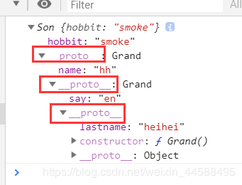</li>
<li>这就是我们的链式结果，大家先了解，我们在下面会详细介绍这部分知识。</li>
<li>原型链的主要功能是体现在js对象的继承方面上的。</li>
<li>简单回顾下构造函数,原型和实例的关系：每一个构造函数（也就是咱们名字大写的函数function F(){}）都有一个原型对象（prototype）,原型对象都包含一个指向构造函数的指针,而实例(instance)都包含一个指向原型对象的内部指针.。</li>
<li>js对象有这么个有趣的规则:如果试图引用对象(实例instance)的某个属性,会首先在对象内部寻找该属性,直至找不到,然后才在该对象的原型(instance.prototype)里去找这个属性。<h3 id="理解原型链"><a href="#理解原型链" class="headerlink" title="理解原型链"></a>理解原型链</h3></li>
<li>这里就以上面的代码为例：同时大家要明确，原型链脱离对象是没意义的。<br>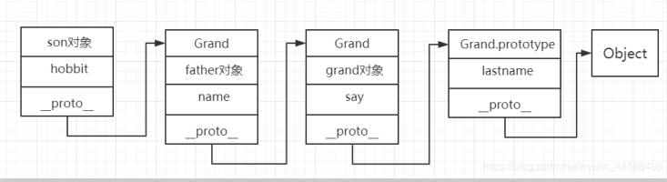</li>
<li>如果每一个原型含有相同的属性名，那也是可以的，不过，任何方法在查找属性都是从son对象开始查找，看看有没有这个属性，如果有的话直接获取，没有再依次查找father、grand直到遍历完原型链。</li>
<li>至于这里为什么<strong>proto</strong>都叫Grand，是由于最上层是Grand.prototype中的contructor构造器是Grand<h3 id="proto-和prototype的关系"><a href="#proto-和prototype的关系" class="headerlink" title="__proto__和prototype的关系"></a>__proto__和prototype的关系</h3></li>
<li><strong>proto</strong>属于对象属性，里面含有的是类.prototype，prototype是类属性。</li>
<li>例如：</li>
</ul>
<figure class="highlight js"><table><tr><td class="gutter"><pre><span class="line">1</span><br><span class="line">2</span><br><span class="line">3</span><br><span class="line">4</span><br></pre></td><td class="code"><pre><span class="line"><span class="function"><span class="keyword">function</span> <span class="title">Person</span>(<span class="params"></span>)</span>&#123;</span><br><span class="line">&#125;</span><br><span class="line"> <span class="keyword">var</span> person = <span class="keyword">new</span> Person();</span><br><span class="line"> <span class="built_in">console</span>.log(person.__proto__ == Person.prototype);</span><br></pre></td></tr></table></figure>

<p>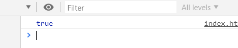</p>
<ul>
<li>这里是相同的，而且形成原型链的时候可以指定Person.prototype的对象。<h3 id="实际原型链分析"><a href="#实际原型链分析" class="headerlink" title="实际原型链分析"></a>实际原型链分析</h3><h5 id="1、简单类型"><a href="#1、简单类型" class="headerlink" title="1、简单类型"></a>1、简单类型</h5></li>
</ul>
<figure class="highlight js"><table><tr><td class="gutter"><pre><span class="line">1</span><br><span class="line">2</span><br><span class="line">3</span><br><span class="line">4</span><br><span class="line">5</span><br><span class="line">6</span><br><span class="line">7</span><br><span class="line">8</span><br><span class="line">9</span><br><span class="line">10</span><br><span class="line">11</span><br></pre></td><td class="code"><pre><span class="line">Person.prototype = &#123;</span><br><span class="line">   name : <span class="string">'a'</span>,</span><br><span class="line">   sayName : <span class="function"><span class="keyword">function</span>(<span class="params"></span>)</span>&#123;</span><br><span class="line">       <span class="built_in">console</span>.log(<span class="keyword">this</span>.name)</span><br><span class="line">   &#125;</span><br><span class="line">&#125;</span><br><span class="line"><span class="function"><span class="keyword">function</span> <span class="title">Person</span>(<span class="params"></span>)</span>&#123;</span><br><span class="line">    <span class="keyword">this</span>.name = <span class="string">'b'</span>;</span><br><span class="line">&#125;</span><br><span class="line"><span class="keyword">var</span> person = <span class="keyword">new</span> Person();</span><br><span class="line">person.sayName();</span><br></pre></td></tr></table></figure>

<p>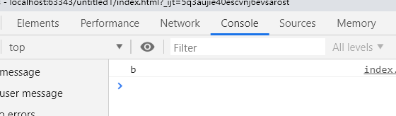</p>
<figure class="highlight js"><table><tr><td class="gutter"><pre><span class="line">1</span><br><span class="line">2</span><br><span class="line">3</span><br><span class="line">4</span><br><span class="line">5</span><br><span class="line">6</span><br><span class="line">7</span><br><span class="line">8</span><br><span class="line">9</span><br><span class="line">10</span><br><span class="line">11</span><br></pre></td><td class="code"><pre><span class="line">Person.prototype = &#123;</span><br><span class="line">    name : <span class="string">'a'</span>,</span><br><span class="line">    sayName : <span class="function"><span class="keyword">function</span>(<span class="params"></span>)</span>&#123;</span><br><span class="line">       <span class="built_in">console</span>.log(<span class="keyword">this</span>.name)</span><br><span class="line">    &#125;</span><br><span class="line">&#125;</span><br><span class="line"><span class="function"><span class="keyword">function</span> <span class="title">Person</span>(<span class="params"></span>)</span>&#123;</span><br><span class="line">   <span class="comment">// this.name = 'b';</span></span><br><span class="line">&#125;</span><br><span class="line"><span class="keyword">var</span> person = <span class="keyword">new</span> Person();</span><br><span class="line">person.sayName();</span><br></pre></td></tr></table></figure>

<p>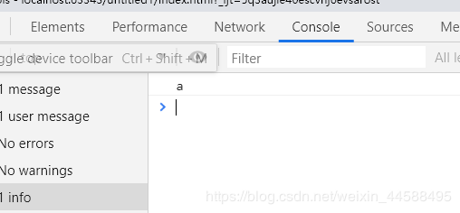</p>
<ul>
<li>将Person中的this.name注释掉，发现就是输出的是原型的值，这也再次验证了上面说的，对象查找属性是从原型链开始查找的，逐步向上查找。<h5 id="2、复杂类型"><a href="#2、复杂类型" class="headerlink" title="2、复杂类型"></a>2、复杂类型</h5><figure class="highlight js"><table><tr><td class="gutter"><pre><span class="line">1</span><br><span class="line">2</span><br><span class="line">3</span><br><span class="line">4</span><br><span class="line">5</span><br><span class="line">6</span><br><span class="line">7</span><br><span class="line">8</span><br><span class="line">9</span><br><span class="line">10</span><br><span class="line">11</span><br><span class="line">12</span><br><span class="line">13</span><br><span class="line">14</span><br><span class="line">15</span><br><span class="line">16</span><br><span class="line">17</span><br><span class="line">18</span><br><span class="line">19</span><br></pre></td><td class="code"><pre><span class="line">Grand.prototype.lastname = <span class="string">"heihei"</span>;</span><br><span class="line"><span class="function"><span class="keyword">function</span> <span class="title">Grand</span>(<span class="params"></span>)</span>&#123;</span><br><span class="line">	<span class="keyword">this</span>.say  = <span class="string">'en'</span>;</span><br><span class="line">&#125;</span><br><span class="line"><span class="keyword">var</span> grand = <span class="keyword">new</span> Grand();</span><br><span class="line">Father.prototype = grand;</span><br><span class="line"><span class="function"><span class="keyword">function</span> <span class="title">Father</span>(<span class="params"></span>)</span>&#123;</span><br><span class="line">	<span class="keyword">this</span>.name = <span class="string">"hh"</span>	</span><br><span class="line">&#125;</span><br><span class="line"><span class="keyword">var</span> father = <span class="keyword">new</span> Father();</span><br><span class="line">Son.prototype = father;</span><br><span class="line"><span class="function"><span class="keyword">function</span> <span class="title">Son</span>(<span class="params"></span>)</span>&#123;</span><br><span class="line">	<span class="keyword">this</span>.hobbit = <span class="string">"smoke"</span>	</span><br><span class="line">&#125;</span><br><span class="line"><span class="keyword">var</span> son = <span class="keyword">new</span> Son();</span><br><span class="line"><span class="built_in">console</span>.log(son.hobbit);</span><br><span class="line"><span class="built_in">console</span>.log(son.name);</span><br><span class="line"><span class="built_in">console</span>.log(son.say);</span><br><span class="line"><span class="built_in">console</span>.log(son.lastname);</span><br></pre></td></tr></table></figure>

</li>
</ul>
<p>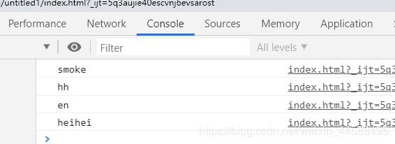</p>
<ul>
<li>这样也再再次验证了。<h3 id="利用实现对象的继承"><a href="#利用实现对象的继承" class="headerlink" title="利用实现对象的继承"></a>利用实现对象的继承</h3></li>
<li>实际上上述的例子就实现了上面的对象继承，但是对于这种情况：无法实现传参。</li>
</ul>
<figure class="highlight js"><table><tr><td class="gutter"><pre><span class="line">1</span><br><span class="line">2</span><br><span class="line">3</span><br><span class="line">4</span><br><span class="line">5</span><br><span class="line">6</span><br><span class="line">7</span><br><span class="line">8</span><br><span class="line">9</span><br><span class="line">10</span><br><span class="line">11</span><br><span class="line">12</span><br></pre></td><td class="code"><pre><span class="line">Person.prototype.info = <span class="function"><span class="keyword">function</span>(<span class="params"></span>)</span>&#123;</span><br><span class="line">       <span class="built_in">console</span>.log(<span class="string">"name:"</span>+<span class="keyword">this</span>.name+<span class="string">",age"</span>+<span class="keyword">this</span>.age+<span class="string">",grade:"</span>+<span class="keyword">this</span>.grade);</span><br><span class="line">   &#125;</span><br><span class="line">   <span class="function"><span class="keyword">function</span> <span class="title">Person</span>(<span class="params">name,age</span>)</span>&#123;</span><br><span class="line">       <span class="keyword">this</span>.name = name;</span><br><span class="line">       <span class="keyword">this</span>.age = age;</span><br><span class="line">   &#125;</span><br><span class="line">   Student.prototype = <span class="keyword">new</span> Person();</span><br><span class="line">   <span class="function"><span class="keyword">function</span> <span class="title">Student</span>(<span class="params">name,age,grade</span>)</span>&#123;</span><br><span class="line">       <span class="keyword">this</span>.grade = grade</span><br><span class="line">   &#125;</span><br><span class="line">   <span class="keyword">var</span> stu = <span class="keyword">new</span> Student(<span class="string">"戴"</span>,<span class="number">20</span>,<span class="number">11</span>);</span><br></pre></td></tr></table></figure>

<ul>
<li>这里的name和age都没有传入进去。我们可以输出一下。</li>
</ul>
<figure class="highlight js"><table><tr><td class="gutter"><pre><span class="line">1</span><br></pre></td><td class="code"><pre><span class="line"><span class="built_in">console</span>.log(stu);</span><br></pre></td></tr></table></figure>

<p>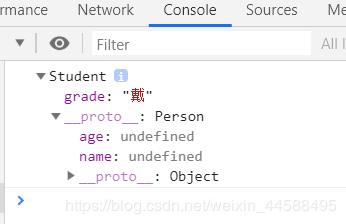</p>
<ul>
<li>这里面的值都是undefined。有的人喜欢这样去修改。</li>
</ul>
<figure class="highlight js"><table><tr><td class="gutter"><pre><span class="line">1</span><br><span class="line">2</span><br><span class="line">3</span><br><span class="line">4</span><br><span class="line">5</span><br><span class="line">6</span><br><span class="line">7</span><br><span class="line">8</span><br><span class="line">9</span><br><span class="line">10</span><br><span class="line">11</span><br><span class="line">12</span><br><span class="line">13</span><br><span class="line">14</span><br><span class="line">15</span><br></pre></td><td class="code"><pre><span class="line">Person.prototype.info = <span class="function"><span class="keyword">function</span>(<span class="params"></span>)</span>&#123;</span><br><span class="line">       <span class="built_in">console</span>.log(<span class="string">"name:"</span>+<span class="keyword">this</span>.name+<span class="string">",age"</span>+<span class="keyword">this</span>.age+<span class="string">",grade:"</span>+<span class="keyword">this</span>.grade);</span><br><span class="line">   &#125;</span><br><span class="line">   <span class="function"><span class="keyword">function</span> <span class="title">Person</span>(<span class="params">name,age</span>)</span>&#123;</span><br><span class="line">       <span class="keyword">this</span>.name = name;</span><br><span class="line">       <span class="keyword">this</span>.age = age;</span><br><span class="line">   &#125;</span><br><span class="line">   Student.prototype = <span class="keyword">new</span> Person();</span><br><span class="line">   <span class="function"><span class="keyword">function</span> <span class="title">Student</span>(<span class="params">name,age,grade</span>)</span>&#123;</span><br><span class="line">       <span class="keyword">this</span>.grade = grade</span><br><span class="line">   &#125;</span><br><span class="line">   <span class="keyword">var</span> stu = <span class="keyword">new</span> Student(<span class="number">11</span>);</span><br><span class="line">   stu.name = <span class="string">"戴"</span>;</span><br><span class="line">   stu.age = <span class="number">20</span>;</span><br><span class="line">   stu.info();</span><br></pre></td></tr></table></figure>

<p>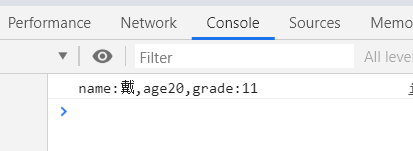</p>
<ul>
<li>第一眼看来，这是正确的，但是实际上这里个问题就是麻烦，不符合正常的面向对象的构造对象的步骤，繁琐。<figure class="highlight js"><table><tr><td class="gutter"><pre><span class="line">1</span><br></pre></td><td class="code"><pre><span class="line"><span class="built_in">console</span>.log(stu)</span><br></pre></td></tr></table></figure>

</li>
</ul>
<p>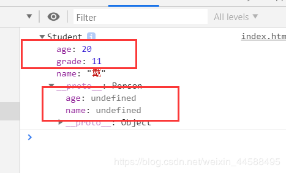</p>
<ul>
<li>这里实际上是再stu对象中，增加了两个实例属性。这也是不符合我们的要求的，我们想的是覆盖undefined。</li>
<li>最终继承代码，也是最牛叉的。</li>
</ul>
<figure class="highlight js"><table><tr><td class="gutter"><pre><span class="line">1</span><br><span class="line">2</span><br><span class="line">3</span><br><span class="line">4</span><br><span class="line">5</span><br><span class="line">6</span><br><span class="line">7</span><br><span class="line">8</span><br><span class="line">9</span><br><span class="line">10</span><br><span class="line">11</span><br><span class="line">12</span><br><span class="line">13</span><br><span class="line">14</span><br><span class="line">15</span><br><span class="line">16</span><br></pre></td><td class="code"><pre><span class="line">Person.prototype.info = <span class="function"><span class="keyword">function</span>(<span class="params"></span>)</span>&#123;</span><br><span class="line">       <span class="built_in">console</span>.log(<span class="string">"name:"</span>+<span class="keyword">this</span>.name+<span class="string">",age"</span>+<span class="keyword">this</span>.age+<span class="string">",grade:"</span>+<span class="keyword">this</span>.grade);</span><br><span class="line">   &#125;</span><br><span class="line">   <span class="function"><span class="keyword">function</span> <span class="title">Person</span>(<span class="params">name,age</span>)</span>&#123;</span><br><span class="line">       <span class="keyword">this</span>.name = name;</span><br><span class="line">       <span class="keyword">this</span>.age = age;</span><br><span class="line">   &#125;</span><br><span class="line">   Student.prototype = <span class="keyword">new</span> Person();</span><br><span class="line">   <span class="function"><span class="keyword">function</span> <span class="title">Student</span>(<span class="params">name,age,grade</span>)</span>&#123;</span><br><span class="line">       Person.call(<span class="keyword">this</span>,name,age);</span><br><span class="line">       <span class="comment">// Person.apply(this,[name,age])</span></span><br><span class="line">       <span class="keyword">this</span>.grade = grade</span><br><span class="line">   &#125;</span><br><span class="line">   <span class="keyword">var</span> stu = <span class="keyword">new</span> Student(<span class="string">"戴"</span>,<span class="number">20</span>,<span class="number">11</span>);</span><br><span class="line">   stu.info();</span><br><span class="line">   <span class="built_in">console</span>.log(stu);</span><br></pre></td></tr></table></figure>

<p>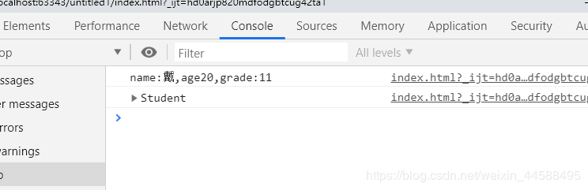</p>
<ul>
<li>利用了一个call或者apply就可以实现。<h3 id="最后一个例子（利于理解）"><a href="#最后一个例子（利于理解）" class="headerlink" title="最后一个例子（利于理解）"></a>最后一个例子（利于理解）</h3></li>
</ul>
<figure class="highlight js"><table><tr><td class="gutter"><pre><span class="line">1</span><br><span class="line">2</span><br><span class="line">3</span><br><span class="line">4</span><br><span class="line">5</span><br><span class="line">6</span><br><span class="line">7</span><br><span class="line">8</span><br><span class="line">9</span><br><span class="line">10</span><br><span class="line">11</span><br><span class="line">12</span><br><span class="line">13</span><br><span class="line">14</span><br><span class="line">15</span><br><span class="line">16</span><br><span class="line">17</span><br><span class="line">18</span><br><span class="line">19</span><br><span class="line">20</span><br><span class="line">21</span><br><span class="line">22</span><br><span class="line">23</span><br><span class="line">24</span><br><span class="line">25</span><br><span class="line">26</span><br><span class="line">27</span><br><span class="line">28</span><br><span class="line">29</span><br><span class="line">30</span><br><span class="line">31</span><br></pre></td><td class="code"><pre><span class="line"><span class="function"><span class="keyword">function</span> <span class="title">Animal</span>(<span class="params">age,sex</span>)</span>&#123;</span><br><span class="line">       <span class="keyword">this</span>.sex = sex;</span><br><span class="line">       <span class="keyword">this</span>.age = age;</span><br><span class="line">       <span class="keyword">this</span>.info = <span class="function"><span class="keyword">function</span>(<span class="params"></span>)</span>&#123;</span><br><span class="line">           <span class="built_in">console</span>.log(<span class="string">"年龄:"</span>+<span class="keyword">this</span>.age+<span class="string">",性别:"</span>+<span class="keyword">this</span>.sex);</span><br><span class="line">       &#125;</span><br><span class="line">   &#125;</span><br><span class="line">   Dog.prototype = <span class="keyword">new</span> Animal();</span><br><span class="line">   <span class="function"><span class="keyword">function</span> <span class="title">Dog</span>(<span class="params">name,age,sex</span>)</span>&#123;</span><br><span class="line">       <span class="keyword">this</span>.name = name;</span><br><span class="line">       Animal.call(<span class="keyword">this</span>,age,sex);</span><br><span class="line">       <span class="keyword">this</span>.bark = <span class="function"><span class="keyword">function</span>(<span class="params"></span>)</span>&#123;</span><br><span class="line">           <span class="built_in">console</span>.log(<span class="keyword">this</span>.name+<span class="string">"的叫声wangwangwang"</span>);</span><br><span class="line">       &#125;</span><br><span class="line">   &#125;</span><br><span class="line"></span><br><span class="line">   <span class="keyword">var</span> dog = <span class="keyword">new</span> Dog(<span class="string">"hsq"</span>,<span class="number">2</span>,<span class="string">'m'</span>);</span><br><span class="line">   dog.info();</span><br><span class="line">   dog.bark();</span><br><span class="line"></span><br><span class="line">   Cat.prototype = <span class="keyword">new</span> Animal();</span><br><span class="line">   <span class="function"><span class="keyword">function</span> <span class="title">Cat</span>(<span class="params">name,age,sex</span>)</span>&#123;</span><br><span class="line">       <span class="keyword">this</span>.name = name;</span><br><span class="line">       Animal.call(<span class="keyword">this</span>,age,sex);</span><br><span class="line">       <span class="keyword">this</span>.bark = <span class="function"><span class="keyword">function</span>(<span class="params"></span>)</span>&#123;</span><br><span class="line">           <span class="built_in">console</span>.log(<span class="keyword">this</span>.name+<span class="string">"的叫声miaomiaomiao"</span>);</span><br><span class="line">       &#125;</span><br><span class="line">   &#125;</span><br><span class="line">   <span class="keyword">var</span> cat = <span class="keyword">new</span> Cat(<span class="string">"bsm"</span>,<span class="number">2</span>,<span class="string">'f'</span>);</span><br><span class="line">   cat.info();</span><br><span class="line">   cat.bark();</span><br></pre></td></tr></table></figure>

<p>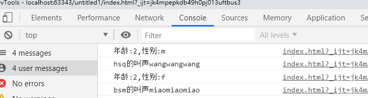</p>

            <div class="post-copyright">
    <div class="content">
        <p>最后更新： 2019年08月02日 15:07</p>
        <p>原始链接： <a class="post-url" href="/2019/08/02/js原型链的世界/" title="js原型链的世界">https://zesystem.github.io/2019/08/02/js原型链的世界/</a></p>
        <footer>
            <a href="https://zesystem.github.io">
                
                Zesystem
            </a>
        </footer>
    </div>
</div>

      
        
            
<div class="page-reward">
    <a id="rewardBtn" href="javascript:;">赏</a>
</div>

<div id="reward" class="post-modal reward-lay">
    <a class="close" href="javascript:;" id="reward-close">×</a>
    <span class="reward-title">
        <i class="icon icon-quote-left"></i>
        请我吃糖~
        <i class="icon icon-quote-right"></i>
    </span>
    <div class="reward-content">
        
        <div class="reward-code">
            
        </div>
        <div class="reward-select">
            
            <label class="reward-select-item checked" data-id="wechat" data-wechat="/images/wechat_code.jpg">
                
            </label>
            
            
            <label class="reward-select-item" data-id="alipay" data-alipay="/images/alipay_code.jpg">
                
            </label>
            
        </div>
    </div>
</div>


        
    </div>
    <footer class="article-footer">
        
        
<div class="post-share">
    <a href="javascript:;" id="share-sub" class="post-share-fab">
        <i class="fa fa-share-alt"></i>
    </a>
    <div class="post-share-list" id="share-list">
        <ul class="share-icons">
          <li>
            <a class="weibo share-sns" target="_blank" href="http://service.weibo.com/share/share.php?url=https://zesystem.github.io/2019/08/02/js原型链的世界/&title=《js原型链的世界》 — Zesystem'blog&pic=/images/yuanxing.png" data-title="微博">
              <i class="fa fa-weibo"></i>
            </a>
          </li>
          <li>
            <a class="weixin share-sns" id="wxFab" href="javascript:;" data-title="微信">
              <i class="fa fa-weixin"></i>
            </a>
          </li>
          <li>
            <a class="qq share-sns" target="_blank" href="http://connect.qq.com/widget/shareqq/index.html?url=https://zesystem.github.io/2019/08/02/js原型链的世界/&title=《js原型链的世界》 — Zesystem'blog&source=js的继承关系不同意搞懂，原型链傻傻不明白，今天用通俗易懂的讲解和例子为大家呈现最简单的原型链理解。" data-title="QQ">
              <i class="fa fa-qq"></i>
            </a>
          </li>
          <li>
            <a class="facebook share-sns" target="_blank" href="https://www.facebook.com/sharer/sharer.php?u=https://zesystem.github.io/2019/08/02/js原型链的世界/" data-title="Facebook">
              <i class="fa fa-facebook"></i>
            </a>
          </li>
          <li>
            <a class="twitter share-sns" target="_blank" href="https://twitter.com/intent/tweet?text=《js原型链的世界》 — Zesystem'blog&url=https://zesystem.github.io/2019/08/02/js原型链的世界/&via=https://zesystem.github.io" data-title="Twitter">
              <i class="fa fa-twitter"></i>
            </a>
          </li>
          <li>
            <a class="google share-sns" target="_blank" href="https://plus.google.com/share?url=https://zesystem.github.io/2019/08/02/js原型链的世界/" data-title="Google+">
              <i class="fa fa-google-plus"></i>
            </a>
          </li>
        </ul>
     </div>
</div>
<div class="post-modal wx-share" id="wxShare">
    <a class="close" href="javascript:;" id="wxShare-close">×</a>
    <p>扫一扫，分享到微信</p>
    
</div>

<div class="mask"></div>

        
        <ul class="article-footer-menu">
            
            
  <li class="article-footer-tags">
    <i class="fa fa-tags"></i>
      
    <a href="/tags/原型链/" class="color4">原型链</a>
      
    <a href="/tags/继承/" class="color3">继承</a>
      
  </li>

        </ul>
        
    </footer>
  </div>
</article>


    <aside class="post-toc-pos post-toc-top" id="post-toc">
        <nav class="post-toc-wrap">
            <ol class="post-toc"><li class="post-toc-item post-toc-level-3"><a class="post-toc-link" href="#原型链是什么鬼？能干啥？"><span class="post-toc-text">原型链是什么鬼？能干啥？</span></a></li><li class="post-toc-item post-toc-level-3"><a class="post-toc-link" href="#理解原型链"><span class="post-toc-text">理解原型链</span></a></li><li class="post-toc-item post-toc-level-3"><a class="post-toc-link" href="#proto-和prototype的关系"><span class="post-toc-text">__proto__和prototype的关系</span></a></li><li class="post-toc-item post-toc-level-3"><a class="post-toc-link" href="#实际原型链分析"><span class="post-toc-text">实际原型链分析</span></a><ol class="post-toc-child"><li class="post-toc-item post-toc-level-5"><a class="post-toc-link" href="#1、简单类型"><span class="post-toc-text">1、简单类型</span></a></li><li class="post-toc-item post-toc-level-5"><a class="post-toc-link" href="#2、复杂类型"><span class="post-toc-text">2、复杂类型</span></a></li></ol></li></ol></li><li class="post-toc-item post-toc-level-3"><a class="post-toc-link" href="#利用实现对象的继承"><span class="post-toc-text">利用实现对象的继承</span></a></li><li class="post-toc-item post-toc-level-3"><a class="post-toc-link" href="#最后一个例子（利于理解）"><span class="post-toc-text">最后一个例子（利于理解）</span></a></li></ol>
        </nav>
    </aside>
    

<nav id="article-nav">
  
    <a href="/2019/08/02/对于springMVC的运行过程的理解/" id="article-nav-newer" class="article-nav-link-wrap">

      <span class="article-nav-title">
        <i class="fa fa-hand-o-left" aria-hidden="true"></i>
        
          对于springMVC的运行过程的理解
        
      </span>
    </a>
  
  
    <a href="/2019/08/01/通俗易懂的js闭包/" id="article-nav-older" class="article-nav-link-wrap">
      <span class="article-nav-title">通俗易懂的js闭包</span>
      <i class="fa fa-hand-o-right" aria-hidden="true"></i>
    </a>
  
</nav>


    
        <div id="SOHUCS" sid="js原型链的世界" ></div>
<script type="text/javascript">
    (function(){
        var appid = 'true';
        var conf = 'true';
        var width = window.innerWidth || document.documentElement.clientWidth;
        if (width < 960) {
            window.document.write('<script id="changyan_mobile_js" charset="utf-8" type="text/javascript" src="https://changyan.sohu.com/upload/mobile/wap-js/changyan_mobile.js?client_id=' + appid + '&conf=' + conf + '"><\/script>'); } else { var loadJs=function(d,a){var c=document.getElementsByTagName("head")[0]||document.head||document.documentElement;var b=document.createElement("script");b.setAttribute("type","text/javascript");b.setAttribute("charset","UTF-8");b.setAttribute("src",d);if(typeof a==="function"){if(window.attachEvent){b.onreadystatechange=function(){var e=b.readyState;if(e==="loaded"||e==="complete"){b.onreadystatechange=null;a()}}}else{b.onload=a}}c.appendChild(b)};loadJs("https://changyan.sohu.com/upload/changyan.js",function(){window.changyan.api.config({appid:appid,conf:conf})}); } })(); </script>
    
</section>
        
      </div>
      <footer id="footer">
  <div class="outer">
    <div id="footer-info" class="inner">
      
<p>
    <span id="busuanzi_container_site_uv" style='display:none'>
        总访客数：<span id="busuanzi_value_site_uv"></span>
    </span>
    <span id="busuanzi_container_site_pv" style='display:none'>
        总访问量：<span id="busuanzi_value_site_pv"></span>
    </span>
</p>


      <p>
        This is Zesystem's personal blog site.
      </p>
    </div>
  </div>
</footer>
    <script async src="//busuanzi.ibruce.info/busuanzi/2.3/busuanzi.pure.mini.js"></script>
<script src="//cdn.bootcss.com/jquery/3.2.1/jquery.min.js"></script>
<script>
  var mihoConfig = {
      root: "https://zesystem.github.io",
      animate: true,
      isHome: false,
      share: true,
      reward: 1
  }
</script>
<div class="sidebar">
    <div id="sidebar-search" title="Search">
        <i class="fa fa-search"></i>
    </div>
    <div id="sidebar-category" title="Categories">
        <i class="fa fa-book"></i>
    </div>
    <div id="sidebar-tag" title="Tags">
        <i class="fa fa-tags"></i>
    </div>
    <div id="sidebar-top">
        <span class="sidebar-top-icon"><i class="fa fa-angle-up"></i></span>
    </div>
</div>
<div class="sidebar-menu-box" id="sidebar-menu-box">
    <div class="sidebar-menu-box-container">
        <div id="sidebar-menu-box-categories">
            <a class="category-link" href="/categories/SSM/">SSM</a><a class="category-link" href="/categories/Web前端开发/">Web前端开发</a><a class="category-link" href="/categories/java基础知识/">java基础知识</a><a class="category-link" href="/categories/java框架/">java框架</a><a class="category-link" href="/categories/maven高级/">maven高级</a><a class="category-link" href="/categories/计算机基础/">计算机基础</a><a class="category-link" href="/categories/设计模式/">设计模式</a>
        </div>
        <div id="sidebar-menu-box-tags">
            <a href="/tags/Mybatis/" style="font-size: 15px;">Mybatis</a> <a href="/tags/SSM框架搭建/" style="font-size: 10px;">SSM框架搭建</a> <a href="/tags/Spring/" style="font-size: 10px;">Spring</a> <a href="/tags/SpringMVC/" style="font-size: 10px;">SpringMVC</a> <a href="/tags/css优先级/" style="font-size: 10px;">css优先级</a> <a href="/tags/css权重/" style="font-size: 10px;">css权重</a> <a href="/tags/scope/" style="font-size: 15px;">scope</a> <a href="/tags/spring/" style="font-size: 10px;">spring</a> <a href="/tags/springMVC/" style="font-size: 15px;">springMVC</a> <a href="/tags/tags1/" style="font-size: 10px;">tags1</a> <a href="/tags/tags2/" style="font-size: 10px;">tags2</a> <a href="/tags/this指向/" style="font-size: 10px;">this指向</a> <a href="/tags/uft-16编码/" style="font-size: 10px;">uft-16编码</a> <a href="/tags/uft-8编码/" style="font-size: 10px;">uft-8编码</a> <a href="/tags/unicode编码/" style="font-size: 10px;">unicode编码</a> <a href="/tags/作用域链/" style="font-size: 15px;">作用域链</a> <a href="/tags/原型链/" style="font-size: 10px;">原型链</a> <a href="/tags/参数的传递方式/" style="font-size: 10px;">参数的传递方式</a> <a href="/tags/变量提升/" style="font-size: 10px;">变量提升</a> <a href="/tags/基础/" style="font-size: 10px;">基础</a> <a href="/tags/基础知识/" style="font-size: 20px;">基础知识</a> <a href="/tags/工厂方法模式/" style="font-size: 10px;">工厂方法模式</a> <a href="/tags/执行期上下文/" style="font-size: 15px;">执行期上下文</a> <a href="/tags/抽象工厂模式/" style="font-size: 10px;">抽象工厂模式</a> <a href="/tags/标签/" style="font-size: 10px;">标签</a> <a href="/tags/浮点数精度/" style="font-size: 10px;">浮点数精度</a> <a href="/tags/简单工厂模式/" style="font-size: 10px;">简单工厂模式</a> <a href="/tags/继承/" style="font-size: 10px;">继承</a> <a href="/tags/解决jar包冲突/" style="font-size: 10px;">解决jar包冲突</a> <a href="/tags/运行原理/" style="font-size: 10px;">运行原理</a> <a href="/tags/闭包/" style="font-size: 10px;">闭包</a> <a href="/tags/预编译/" style="font-size: 10px;">预编译</a>
        </div>
    </div>
    <a href="javascript:;" class="sidebar-menu-box-close">&times;</a>
</div>
<div class="mobile-header-menu-nav" id="mobile-header-menu-nav">
    <div class="mobile-header-menu-container">
        <span class="title">Menus</span>
        <ul class="mobile-header-menu-navbar">
            
            <li>
                <a  href="/">
                    <i class="fa fa-home"></i><span>我的家</span>
                </a>
            </li>
            
            <li>
                <a  href="/archives">
                    <i class="fa fa-archive"></i><span>干货s</span>
                </a>
            </li>
            
            <li>
                <a  href="/about">
                    <i class="fa fa-user"></i><span>关于me</span>
                </a>
            </li>
            
        </ul>
    </div>
    <div class="mobile-header-tag-container">
        <span class="title">Tags</span>
        <div id="mobile-header-container-tags">
            <a href="/tags/Mybatis/" style="font-size: 15px;">Mybatis</a> <a href="/tags/SSM框架搭建/" style="font-size: 10px;">SSM框架搭建</a> <a href="/tags/Spring/" style="font-size: 10px;">Spring</a> <a href="/tags/SpringMVC/" style="font-size: 10px;">SpringMVC</a> <a href="/tags/css优先级/" style="font-size: 10px;">css优先级</a> <a href="/tags/css权重/" style="font-size: 10px;">css权重</a> <a href="/tags/scope/" style="font-size: 15px;">scope</a> <a href="/tags/spring/" style="font-size: 10px;">spring</a> <a href="/tags/springMVC/" style="font-size: 15px;">springMVC</a> <a href="/tags/tags1/" style="font-size: 10px;">tags1</a> <a href="/tags/tags2/" style="font-size: 10px;">tags2</a> <a href="/tags/this指向/" style="font-size: 10px;">this指向</a> <a href="/tags/uft-16编码/" style="font-size: 10px;">uft-16编码</a> <a href="/tags/uft-8编码/" style="font-size: 10px;">uft-8编码</a> <a href="/tags/unicode编码/" style="font-size: 10px;">unicode编码</a> <a href="/tags/作用域链/" style="font-size: 15px;">作用域链</a> <a href="/tags/原型链/" style="font-size: 10px;">原型链</a> <a href="/tags/参数的传递方式/" style="font-size: 10px;">参数的传递方式</a> <a href="/tags/变量提升/" style="font-size: 10px;">变量提升</a> <a href="/tags/基础/" style="font-size: 10px;">基础</a> <a href="/tags/基础知识/" style="font-size: 20px;">基础知识</a> <a href="/tags/工厂方法模式/" style="font-size: 10px;">工厂方法模式</a> <a href="/tags/执行期上下文/" style="font-size: 15px;">执行期上下文</a> <a href="/tags/抽象工厂模式/" style="font-size: 10px;">抽象工厂模式</a> <a href="/tags/标签/" style="font-size: 10px;">标签</a> <a href="/tags/浮点数精度/" style="font-size: 10px;">浮点数精度</a> <a href="/tags/简单工厂模式/" style="font-size: 10px;">简单工厂模式</a> <a href="/tags/继承/" style="font-size: 10px;">继承</a> <a href="/tags/解决jar包冲突/" style="font-size: 10px;">解决jar包冲突</a> <a href="/tags/运行原理/" style="font-size: 10px;">运行原理</a> <a href="/tags/闭包/" style="font-size: 10px;">闭包</a> <a href="/tags/预编译/" style="font-size: 10px;">预编译</a>
        </div>
    </div>
</div>
<div class="search-wrap">
    <span class="search-close">&times;</span>
        <a href="javascript:;" class="header-icon waves-effect waves-circle waves-light" id="back">
            <i class="icon icon-lg icon-chevron-left"></i>
        </a>
        <input class="search-field" placeholder="Search..." id="keywords">
        <a id="search-submit" href="javascript:;">
            <i class="fa fa-search"></i>
        </a>
    <div class="search-container" id="search-container">
        <ul class="search-result" id="search-result">
        </ul>
    </div>
</div>

<div id="search-tpl">
    <li class="search-result-item">
        <a href="{url}" class="search-item-li">
            <span class="search-item-li-title" title="{title}">{title}</span>
        </a>
    </li>
</div>
<script src="/js/search.js"></script>
<script src="/js/main.js"></script>


  <script src="//cdn.bootcss.com/particles.js/2.0.0/particles.min.js"></script>
  <div id="particles"></div>
  <script src="/js/particles.js"></script>


  <link rel="stylesheet" href="//cdn.bootcss.com/animate.css/3.5.0/animate.min.css">
  <script src="//cdn.bootcss.com/scrollReveal.js/3.0.5/scrollreveal.js"></script>
  <script src="/js/animate.js"></script>


  <script src="/js/pop-img.js"></script>
  <script>
     $(".article-entry p img").popImg();
  </script>

  </div>
</body>
</html>